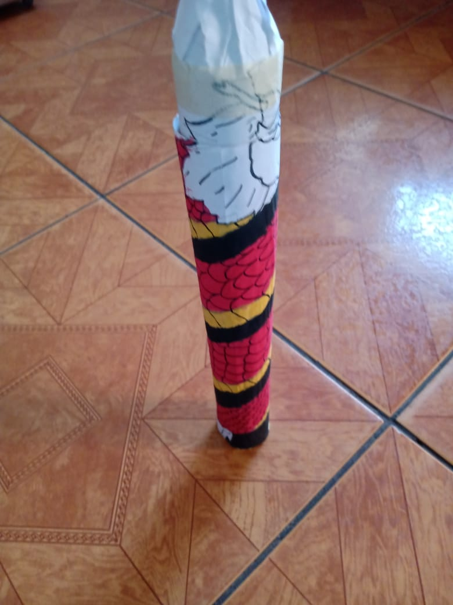
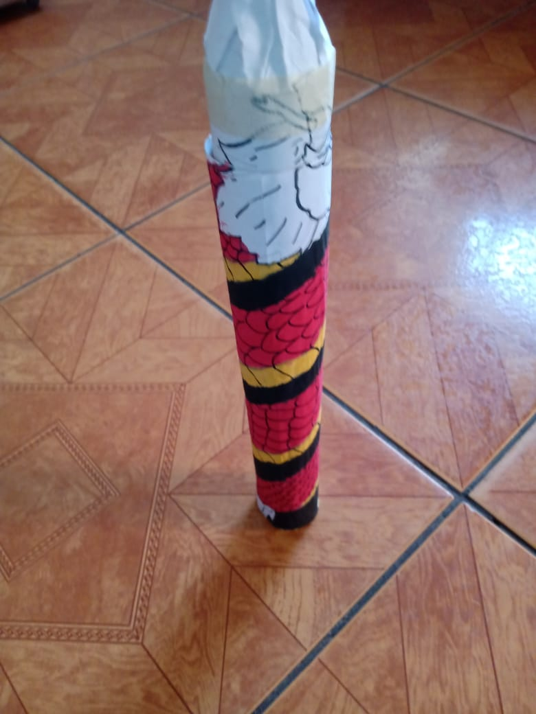
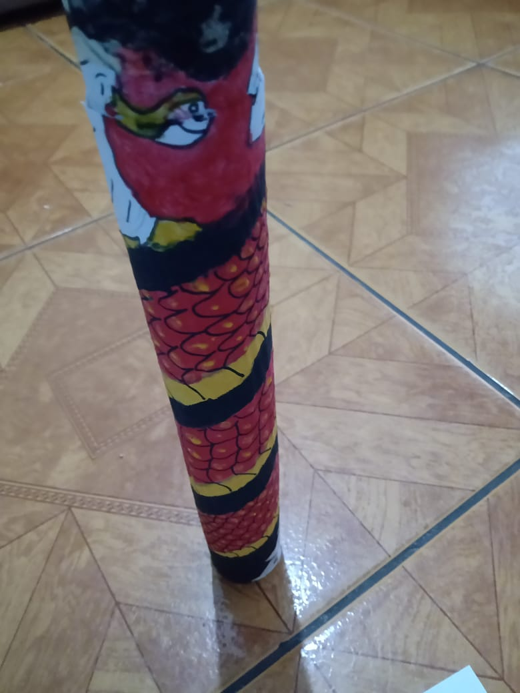
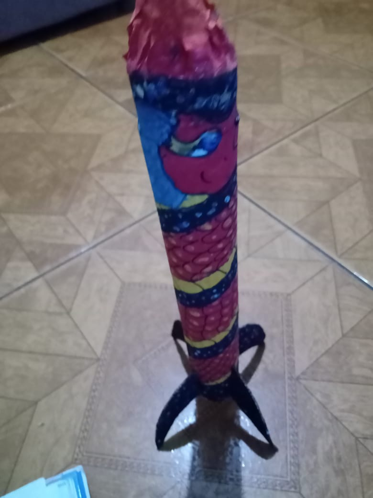
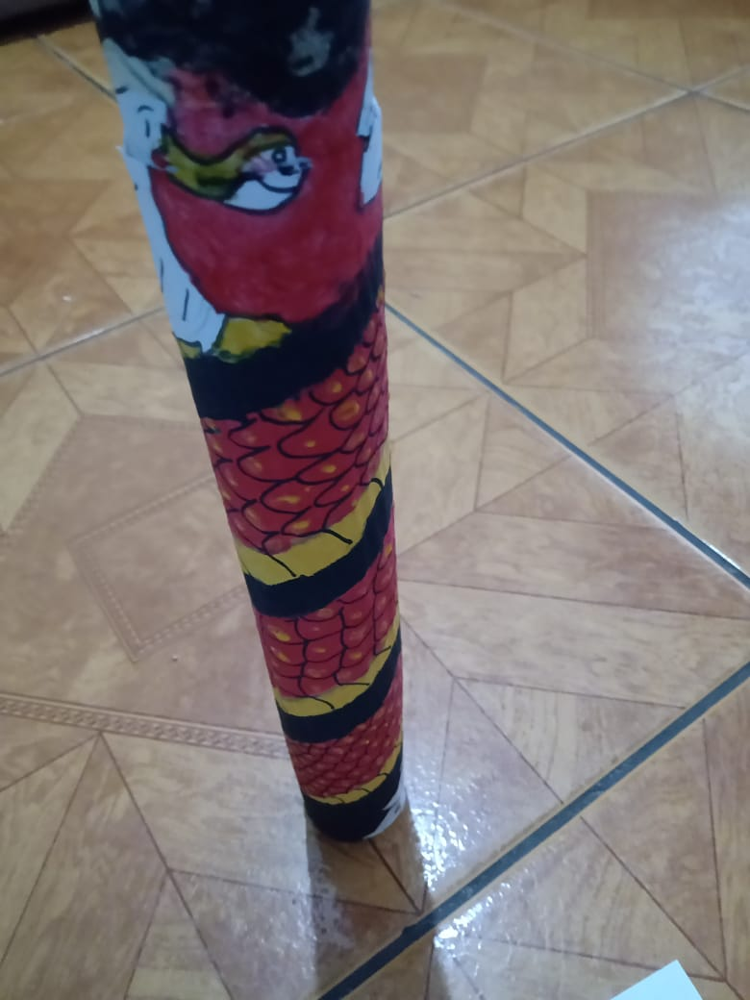
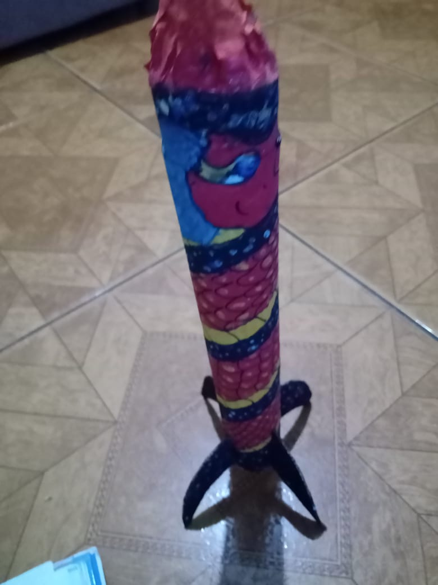

Desenvolvido por alunos do curso de Tecnologia da Informação (T.I) da Etec MCM, nosso protótipo de foguete é uma fusão impressionante de tecnologia e exploração espacial. Com ênfase na integração de sistemas, incorporamos sensores inteligentes, sistemas de controle e telemetria avançada para garantir um lançamento seguro e controlado, ao mesmo tempo em que coletamos dados valiosos. Com uma estrutura aerodinâmica e materiais otimizados, alcançamos eficiência e estabilidade. Algoritmos de controle avançados e soluções de software customizadas permitiram um lançamento suave e preciso. Este projeto demonstra nossa capacidade de inovar, colaborar e superar desafios, refletindo nossa paixão pela exploração espacial e tecnologia.
Para mais detalhes sobre o projeto, acesse nosso repositório no GitHub:
GitHub do Projeto 

 



pessoa 1
pessoa 2
pessoa 3
pessoa 4

pessoa 5

pessoa 6
O Arduino é uma plataforma de prototipagem eletrônica de código aberto, enquanto o draw.io é uma ferramenta online gratuita de diagramação e desenho gráfico. O Arduino facilita a criação de projetos interativos, oferecendo uma combinação de hardware e software acessíveis para entusiastas e iniciantes em eletrônica. Sua comunidade ativa contribui para uma ampla gama de projetos, desde automação residencial até educação em ciência da computação.
A ferramenta online que usamos draw.io é uma solução versátil para criar diversos tipos de diagramas, como fluxogramas, organogramas e mapas mentais. Com uma interface intuitiva e uma biblioteca extensa de formas e elementos gráficos, o draw.io permite a criação de representações visuais detalhadas. Sua capacidade de armazenamento na nuvem e colaboração em tempo real torna-o ideal para equipes que precisam trabalhar juntas de forma eficiente.